Product Thesis v3 — March 9, 2026
When Valentin and Anabel ran the HPT process with production crews, people stopped threatening to kill each other and started functioning as a team. That happened. But Sara doesn't have Valentin and Anabel in any of her seven productions. She has nothing.
The full HPT process requires a consultant embedded in each production — too expensive, too intrusive, too disruptive for a running crew. So Sara gets zero coverage of the human layer. No early warning. No team alignment. Nobody watching whether people are working the way they agreed to. She finds out about problems when they become crises.
Our product makes the HPT process accessible for the first time. The AI does the heavy lifting — onboarding prep, private coaching, monitoring, nudges. One consultant covers all productions — seeding the system with organizational knowledge, monitoring the dashboard, dropping in for kickoffs and key moments. The cost is a fraction of embedding a consultant per production. The intrusion is minimal — people talk to the AI on their phone.
The unit of transformation is the conversation. Everything we build exists to make conversations better, more frequent, or more grounded in reality.
This is not a PLIA-only product. Production is where we start — because PLIA gives us the richest operational data layer and Axialent gives us the methodology. But the architecture is designed to plug into any environment where teams coordinate complex work: software teams with Jira/Linear, consulting teams with deliverable trackers, any organization with project management tools and a communication layer. The ontology, the team agreement, the coaching, the pulse, and the trust architecture are industry-agnostic. What compounds is the behavioral knowledge across teams.
The product's intelligence comes from four sources that build on each other. All four are part of the minimum lovable product — not a build sequence where each phase unlocks the next, but layers that work together from day one.
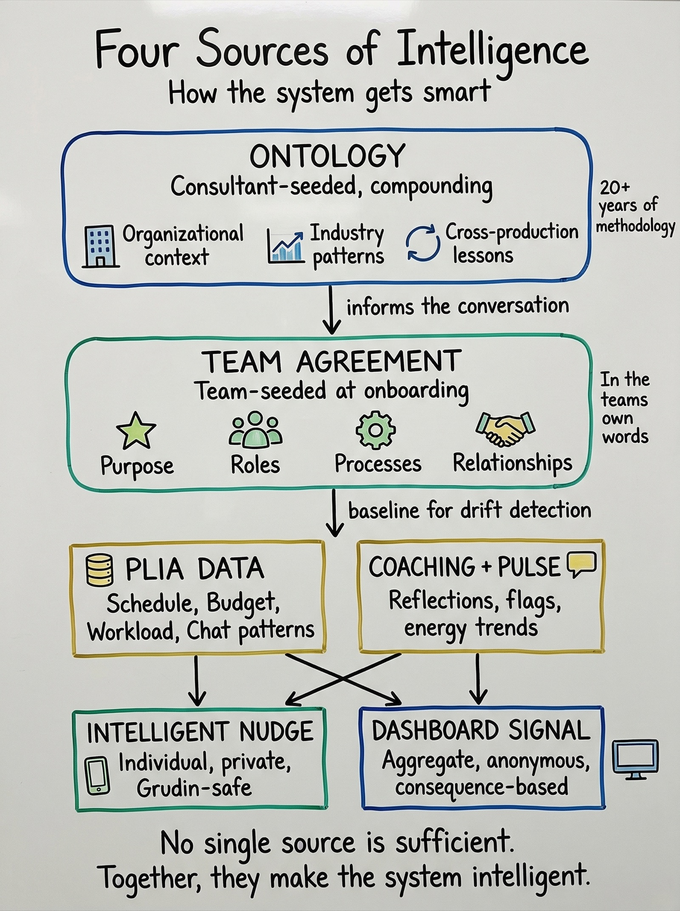
An embedded consultant-engineer seeds the organizational context before any team touches the system — what iZen is, how productions work, typical failure patterns, when risks cluster, and 20+ years of Axialent methodology structured into the system's architecture. This is professional services work. Our job, not the client's.
The ontology includes cross-production lessons: "scene approval bypasses happen in month 1", "dual-unit syncs drop off in week 3-4", "in Cacao y Compania, adding a budget-check gate resolved it in a week." This is what makes the onboarding conversation informed rather than blank. Without it, every team starts from zero. With it, the system says "in 3 of the last 5 iZen productions..." during the moment the team is deciding how to work.
"The learning doesn't live in a report nobody reads. It lives inside the conversation where it matters."
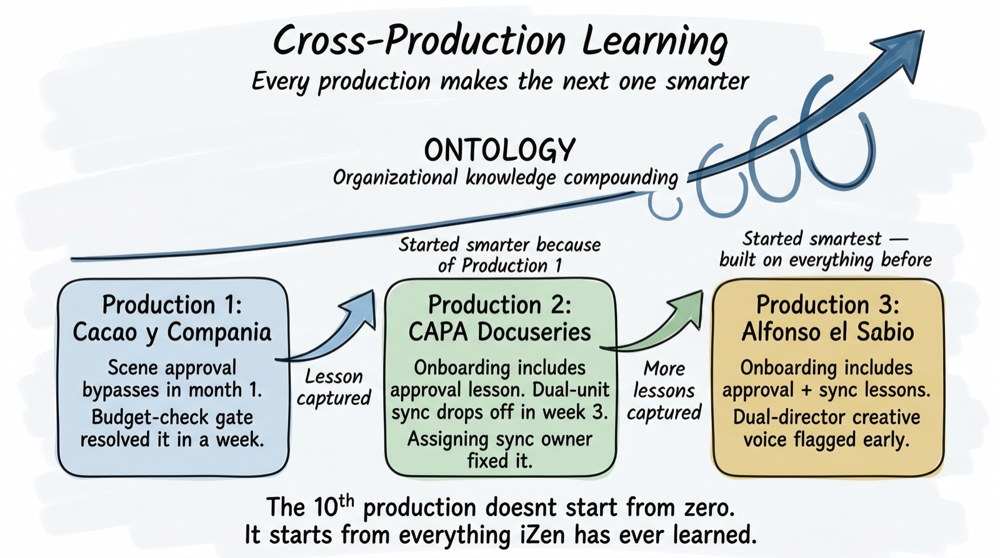
The ontology compounds. Every production adds to it — what patterns appeared, what interventions worked, what agreements held up. By the 10th production, the system has organizational memory that no individual consultant could carry alone.
Before the team meets, the AI does the prep work — individual conversations with each person, async, on their phone:
"You're the production designer on Alfonso el Sabio. What do you need to do your best work?"
"In 3 of the last 5 productions, scene changes hit art departments without budget approval. How should your team handle that?"
"What does 'yes' mean when someone commits your department to something?"
The ontology surfaces lessons from previous productions at the moments they matter. The AI covers the four dimensions — purpose, roles, processes, relationships — not as a framework to fill out, but as questions that matter to the person.
The human consultant walks into the onboarding session already informed — they know what everyone said, where the tensions are, what the ontology flagged. The session is shorter, sharper, and more productive because the groundwork is done.
The consultant doesn't need to be in every room. They seed the ontology, review the AI's synthesis before the kickoff, and show up for the session itself. One consultant, seven productions — because the AI did the groundwork.
The result is a living team agreement in the team's own words. It becomes the AI's baseline: when it observes drift, it measures against what this team said, not generic best practices.
The product needs enough business context to know when key moments happen and what the team is supposed to deliver. Without this, coaching and pulse are disconnected from reality — the AI doesn't know that a milestone is approaching or that workload just spiked.
For PLIA, this means a scoped integration — not ingesting every budget line item or scene breakdown, but enough to know: what are the major milestones? What are the key deliverables? When do the high-coordination moments cluster? PLIA already runs 80-100 AI agents processing schedule, budget, logistics, and script data. We don't need all of it. We need the minimum slice that, combined with the ontology and team agreement, makes the coaching timely and the dashboard grounded.
The validation question for every client: What is the minimum slice of your operational data that makes this meaningful?
This source is deliberately scoped for the minimum lovable product. Deeper integration — full budget tracking, granular schedule analysis, cascade risk modeling — is a future layer that adds precision, not a prerequisite for delivering value.
What individuals share privately — reflections, pulse check-ins, coaching conversations — feeds back into the system's intelligence. But pulse isn't generic. It's triggered by what matters to this team at this moment.
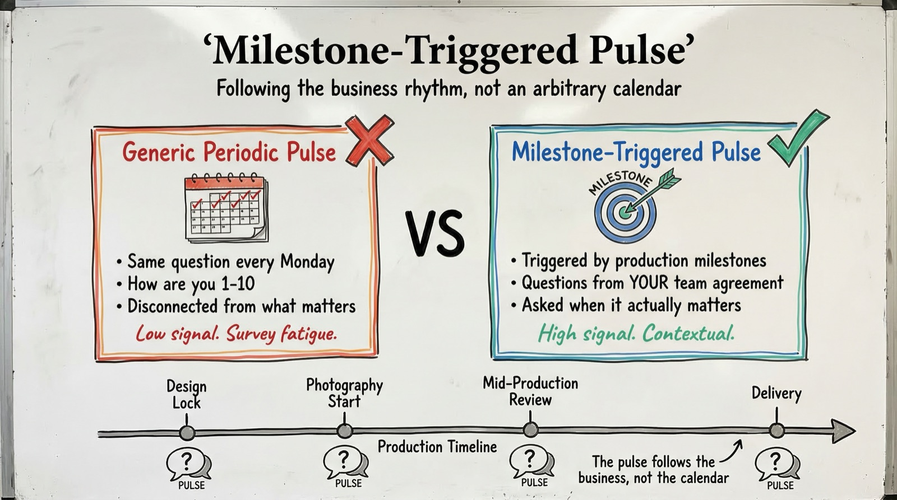
Milestone-triggered pulse: The operational context tells the system when high-stakes moments are approaching. One week before design lock, the AI checks in: "How are you feeling about the design closing next week? Anything unresolved?" After a major delivery: "That sprint is done. What worked? What broke?" The timing is driven by the business, not a calendar.
Agreement-grounded pulse: The team agreement tells the system what to ask about. If the team agreed "flag issues early," the pulse at week 3 asks: "Anything worth flagging before it gets bigger?" If a role boundary was important during onboarding, the check-in at a coordination crunch asks about that specifically.
Elena flagged "prep time" in week 2; two weeks later, her department is at 94% with a new scene landing. The nudge isn't a cold alert — it's informed by what she herself said. Pulse trends show energy dropping. Combined with workload data, this becomes a signal before anyone escalates.
This source is strictly private at the individual level. Only anonymous aggregates reach the dashboard.
No single source is sufficient. The ontology without team agreements is generic. Team agreements without operational context can't detect consequences. Operational context without the ontology can't interpret what a schedule gap means for this team. Coaching without the other three is just a chatbot asking "how are you?"
The hypothesis we're validating: these four sources — ontology, team agreement, scoped operational context, and milestone-triggered pulse — are sufficient to deliver the core value proposition. This is the 80/20.
The user never sees the ontology, the data layer, or the agreement structure. They experience a private coach and a dashboard.
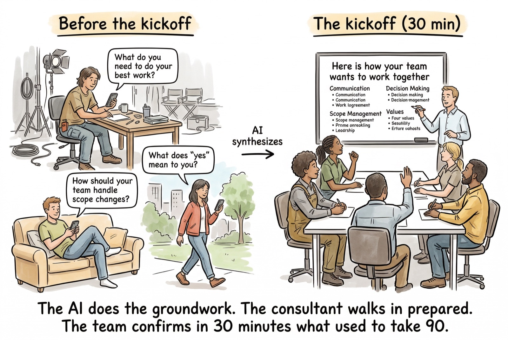
The coaching starts before day one — the AI's onboarding prep is the first coaching interaction. From there, the system continues in five modes:
The coach remembers what you said, notices patterns in your own reflections, and asks one question. Then it waits.
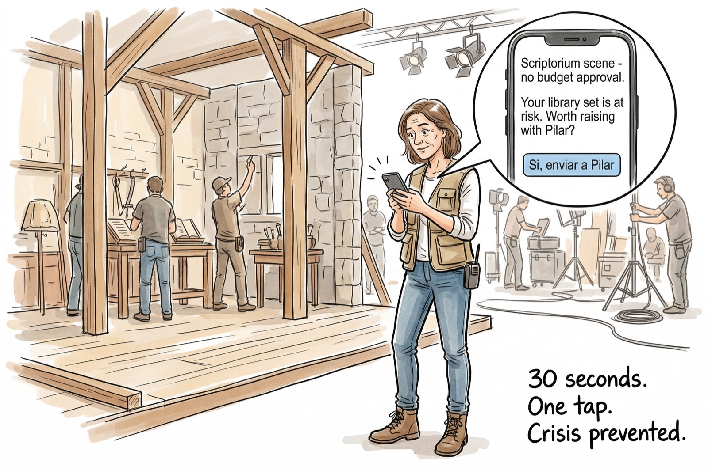
Sara runs multiple productions. She can't be in every room. Her dashboard shows her where to pay attention — consequences and patterns, never individual behavior.
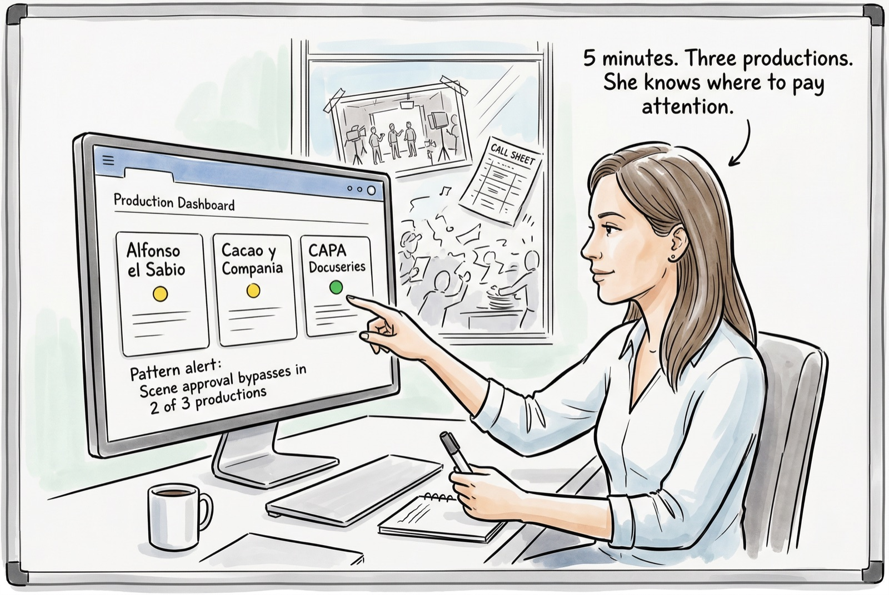
| Production | Status | Key Signal | Days Open |
|---|---|---|---|
| Alfonso el Sabio | Yellow | Schedule/budget gap: scriptorium scene. Unit sync inactive. | 8 / 11 |
| Cacao y Compania | Yellow | Overdue: location permits. | 3 |
| CAPA Docuseries | Green | Clean. | — |
Pattern alert: "Scene approval bypasses in 2 of 3 productions — may indicate systemic gap in approval process across iZen."
What Sara doesn't see: who caused it, who was coached, who said what in their pulse, who ignored a nudge. She sees consequences and patterns. People, not the system, decide what to do about them.
The line producer gets the same data at daily-operations altitude. The consultant gets an intervention map. Same signals, three views.
The product dies if people feel watched.
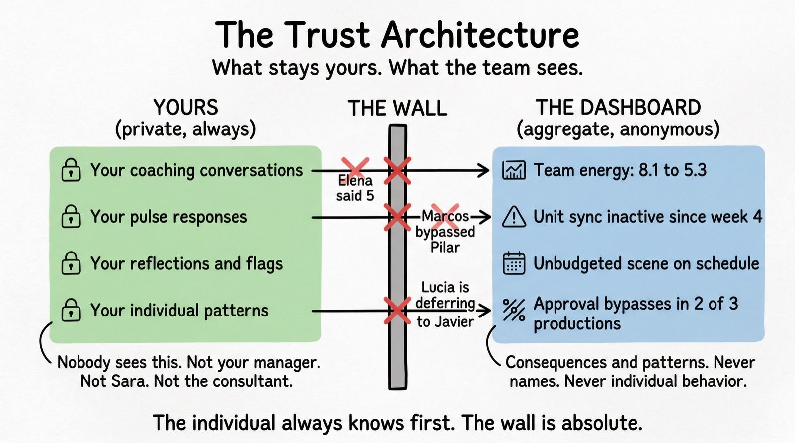
If the system notices something about your behavior, it tells you before anyone else. Marcos is bypassing the approval process? Marcos gets the private nudge. If he doesn't act, the consequence — an unapproved scene on the schedule — surfaces on the dashboard. Not his behavior.
Your conversations, reflections, and pulse responses belong to you. Management never sees individual coaching data. The wall is technical, not policy.
Management sees "art department energy dropped from 8 to 5" — not "Elena said 5." The dashboard surfaces patterns, never names.
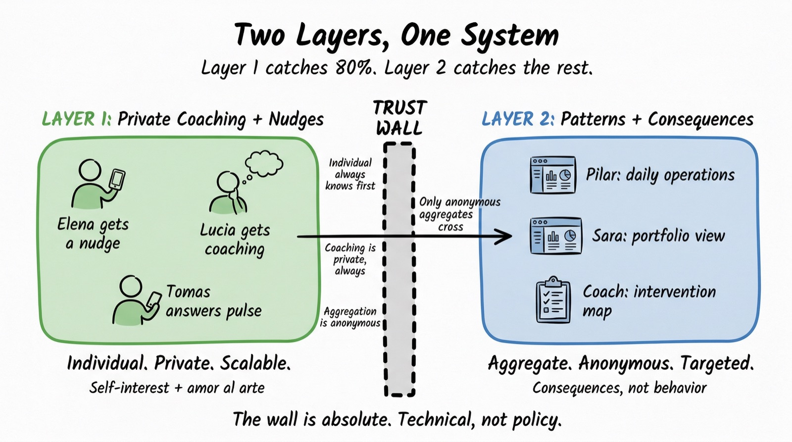
The onboarding conversation is also the transparency conversation. Spoken out loud, as a team: here's what the system observes in your work channels, here's what it never does. People already opted into PLIA processing their chats for operational purposes. The human-layer observation is pattern-level on top of that same data. Not new access. New interpretation.
PLIA agents do work — order props, track budgets, resolve logistics. This product does nothing tangible. It holds up a mirror.
It never acts. It never escalates without your knowledge. It never does the hard conversation for you. The hard conversation is still hard. The system just makes it harder to avoid.
We don't fix teams. We make it easier for teams to fix themselves — and harder to pretend everything's fine.
"You don't have to remember. We remind you, structurally."
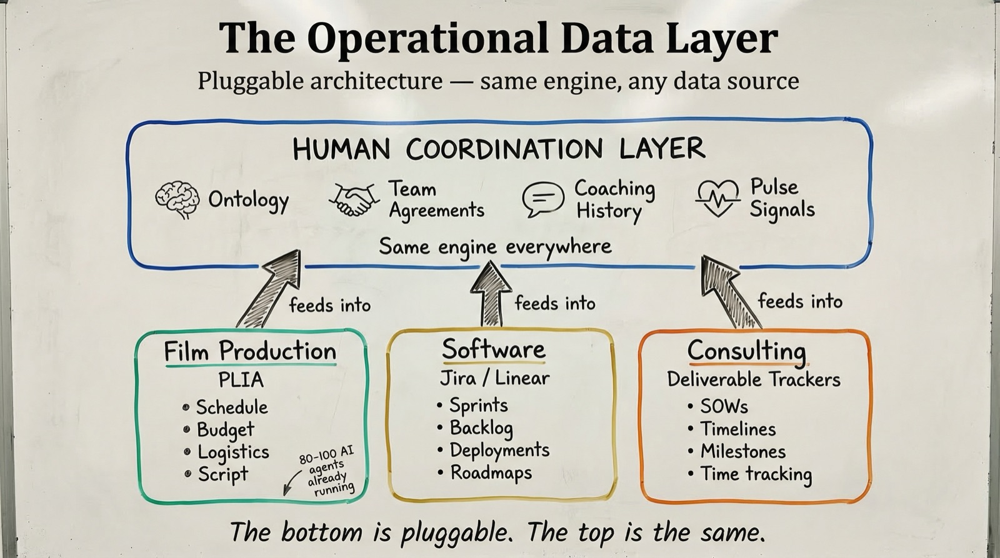
The product adds a human-coordination layer on top of whatever operational tools a client already uses: the ontology (cross-team lessons, methodology), team agreements (what each team said they'd do), coaching history (what individuals have flagged), and pulse signals (self-reported energy and concerns).
This is new data — but it's lightweight to capture. People tell the system things through conversations, not forms. The ontology is seeded once per client by the consultant-engineer. The heavy infrastructure is what the client already built.
For PLIA: Their operational layer already processes schedule, budget, logistics, and script data. We integrate at the milestone and deliverable level — enough to know when key moments happen and what's at stake, without ingesting every line item.
The real value: operational data that already exists gets reinterpreted through the human-coordination lens. "Unbudgeted scene on schedule" is an operational fact. Seen through the ontology and the team agreement, it becomes a signal that matters for people, not just logistics.
For other environments: A software team's Jira tells us sprint milestones and workload. A consulting firm's deliverable tracker tells us deadlines and dependencies. The integration is scoped to key moments and deliverables — the minimum context that makes coaching timely and the dashboard grounded.
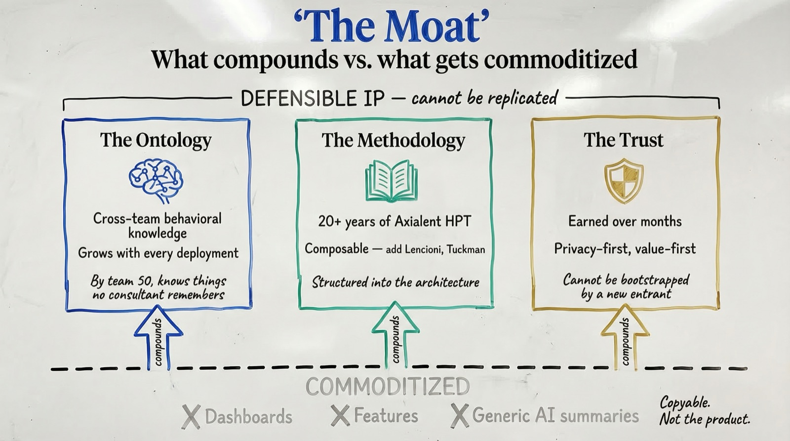
The product lives in a world where AI tools are commoditizing fast. In 36 months, any team could wire up a generic AI to read their Slack and summarize meetings. That's not what we build.
The moat is the accumulated intellectual property — not the software.
Three things compound and can't be replicated by a generic tool:
A dashboard can be copied. A feature can be matched. An ontology that carries the behavioral learnings of hundreds of teams, interpreted through proven methodology, delivered through a trust relationship that took months to earn — that's the product.
Today Sara has zero coverage of the human layer. The only option — a consultant embedded per production — is too expensive and too intrusive. So she gets nothing.
With this product, one consultant covers all seven productions:
The AI does the daily work — coaching, nudges, pulse, drift detection. The consultant does the judgment calls. Neither replaces the other.
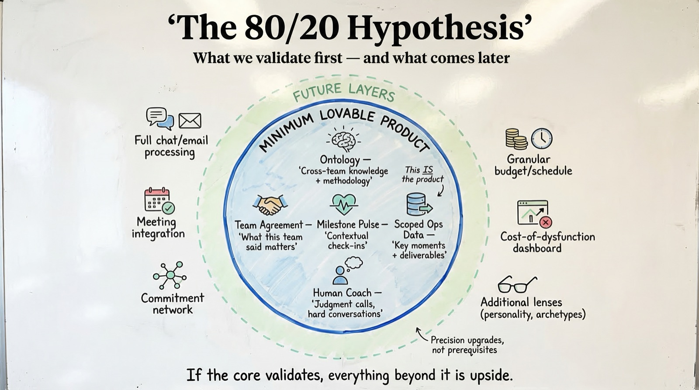
Before building deeper integrations, we validate a core hypothesis:
Is the combination of ontology + team agreement + milestone-triggered pulse + scoped operational context + a human coach sufficient to catch team problems early and make coaching meaningful?
This is the pareto question. We believe that "just" having a strong ontology and team agreement gives you enough to coach people on drift, surface tensions, and give signals to Sara and the coach. The gap between what people said they'd do and what they're doing — measured through pulse, interpreted through the ontology, grounded in business milestones — might be the 80% of the value.
If the 80/20 validates, everything beyond it is a precision upgrade. If it doesn't, we learn exactly what's missing and scope the next layer.
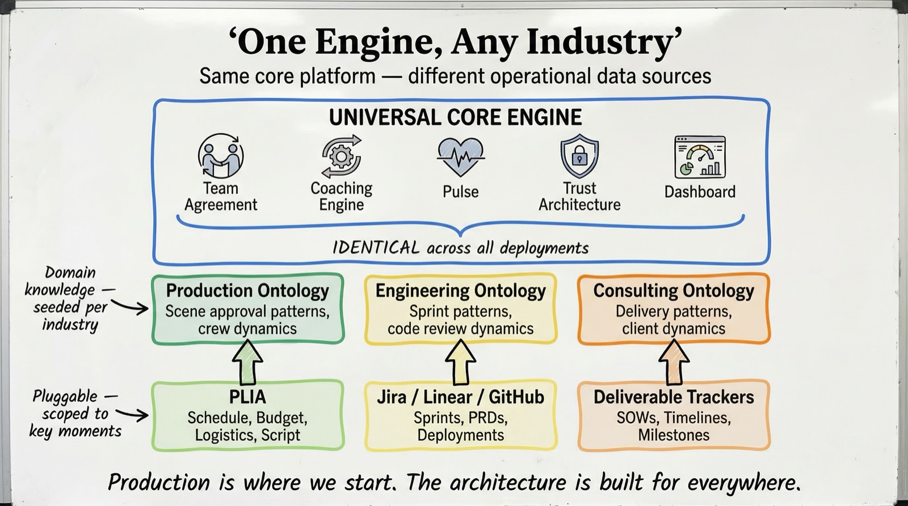
| Film Production | Software | Consulting | |
|---|---|---|---|
| What needs to be done | Scripts | PRDs / specs | SOWs / scopes |
| Who does what when | Movie Magic | Jira / Linear | Deliverable trackers |
| Resources | Movie Magic Budget | Roadmaps | Time tracking |
| Where people talk | Google Chat | Slack / Teams | Email / Teams |
| What's missing | The human layer | The human layer | The human layer |
The architecture is built for this from day one. The ontology, team agreement, coaching engine, pulse mechanism, and trust architecture are industry-agnostic. What changes per deployment is the operational data source and the domain-specific knowledge seeded into the ontology.
Production is where we start — because PLIA gives us the data layer and Axialent gives us the methodology. But the operational data layer is a pluggable interface, not a hardcoded integration. When we move to software teams, the ontology gets seeded with engineering coordination patterns instead of production patterns. The pulse gets triggered by sprint milestones instead of shoot schedules. The coaching asks about standups and code reviews instead of scene approvals.
Sara couldn't afford this before. Now she can — and every production makes the next one smarter.
Jonathan Grudin's finding: if the people doing the work don't get direct personal benefit, they won't use the system. This is the single most common cause of death for team collaboration tools.
Our constraint: every interaction must give the person doing it something they want. The team-level intelligence is a byproduct of individuals getting value — never the other way around.
The product works without commitment extraction. It becomes a future intelligence upgrade that adds:
Start without it. Add it when real usage data tells you where it adds the most value. (Discussed and deliberately deferred.)
Sara's dashboard currently shows consequences and patterns. A future layer adds estimated financial impact: what is this problem costing you?
Thierry's methodology for quantifying team misalignment cost is a starting point. This layer turns the dashboard from "here's a problem" into "here's what this problem costs you" — a retention and selling mechanism. Open question: is this part of the minimum lovable product or v1.1?
The ontology is designed to absorb richer context over time:
A future product evolution progressively enters meetings:
Each stage requires trust already established. Explicitly outside the minimum lovable product.